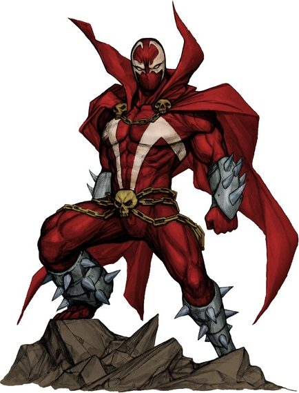
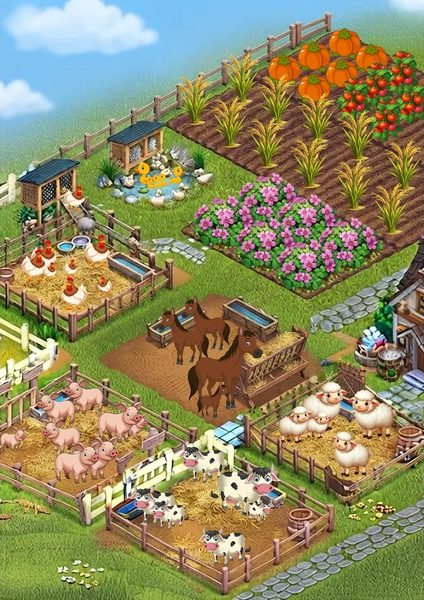
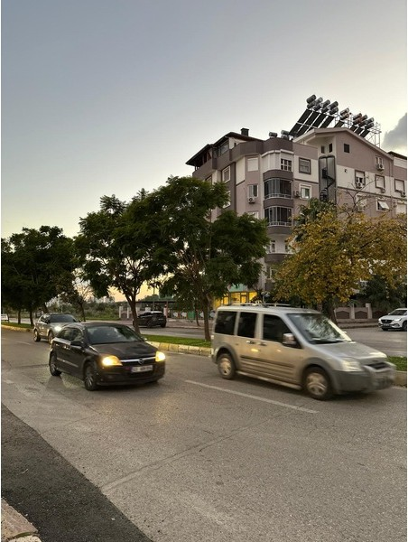

Projects
Work I prepared for the Graphic Animation I course.

Inside Out 2 poster
A study in Photoshop's History Brush tool. I chose Inside Out 2, an animation I love: I turned the characters black and white and painted only Joy's colour back in, so every eye lands on one spot. I finished the poster with a line in the film's spirit: “Sometimes a single colour is enough to tell the whole story.”
- Goal
- Learning Photoshop's History Brush tool.
- How I did it
- I chose Inside Out 2, an animation I love. I turned the characters black and white and painted only Joy's colour back in with the brush.
- Result
- Every eye lands on one spot. I added a line in the film's spirit to the poster: “Sometimes a single colour is enough to tell the whole story.”
- Tools
- PhotoshopHistory Brush

Fusetea product poster
A product promotion piece: I used every shade of green for a mango and pineapple flavoured drink. From the dark background to the leaves, from soft light bokeh to the can's metallic surface, every colour belongs to one family. The result is a fresh, vivid and striking promo poster.
- Goal
- Making an impressive poster that promotes a product.
- How I did it
- I used every shade of green for a mango and pineapple drink: from the dark background to the leaves, from soft light bokeh to the can's metallic surface.
- Result
- Because every colour belongs to one family, the result is a fresh, vivid and striking promo poster.
- Tools
- Product promotionShades of green

Spawn character study
A digital colouring of a pencil drawing. I gave the character volume with shading and, through careful colour choices, made him the focus of the scene: the red cape and metal details stand out against the plain rocky ground.
- Goal
- Colouring a pencil drawing with shading and careful colour choices.
- How I did it
- I gave the character volume with shading and chose the colours so that he becomes the focus of the scene.
- Result
- The red cape and metal details stand out against the plain rocky ground.
- Tools
- Pencil-art colouringShadingColour choice

Farm game scene
A scene I designed with the Smart Object technique for a farm game of my own. Fields, a flower garden and animal pens: cows, pigs, sheep, horses, chickens and plants bring the game's world to life. Thanks to Smart Objects, every element can be edited without losing quality.
- Goal
- Designing a game scene with the Smart Object technique.
- How I did it
- For a farm game idea of my own I built fields, a flower garden and animal pens; cows, pigs, sheep, horses, chickens and plants bring the scene to life.
- Result
- Thanks to Smart Objects, every element can be edited without losing quality.
- Tools
- Smart ObjectGame art

Image Stack: an empty street
I took many photos of one place, and moving cars kept crossing the frame. In Photoshop I combined the photos with the Image Stack technique and removed the moving objects. The road and the building stayed, the passing cars vanished.

- Goal
- Learning the Image Stack technique: combining photos of one place to remove moving objects.
- How I did it
- I took many photos of one place, with cars moving through the frames. In Photoshop I combined the photos as a stack and removed the moving objects.
- Result
- The road and the building stayed, the passing cars vanished completely: I ended up with a photo of an empty street.
- Tools
- PhotoshopImage Stack

Starbucks web page
I designed the interface of Starbucks' website in Photoshop with advanced techniques and great care: festive campaign colours, clear sections for drinks, recommendations and offers, and a readable layout.
- Goal
- Preparing a web interface.
- How I did it
- I designed the interface of Starbucks' website in Photoshop with advanced techniques and great care.
- Result
- The result has festive campaign colours, clear sections (drinks, recommendations, offers) and a readable layout. I also wrote about this work on my blog.
- Tools
- PhotoshopWeb interface